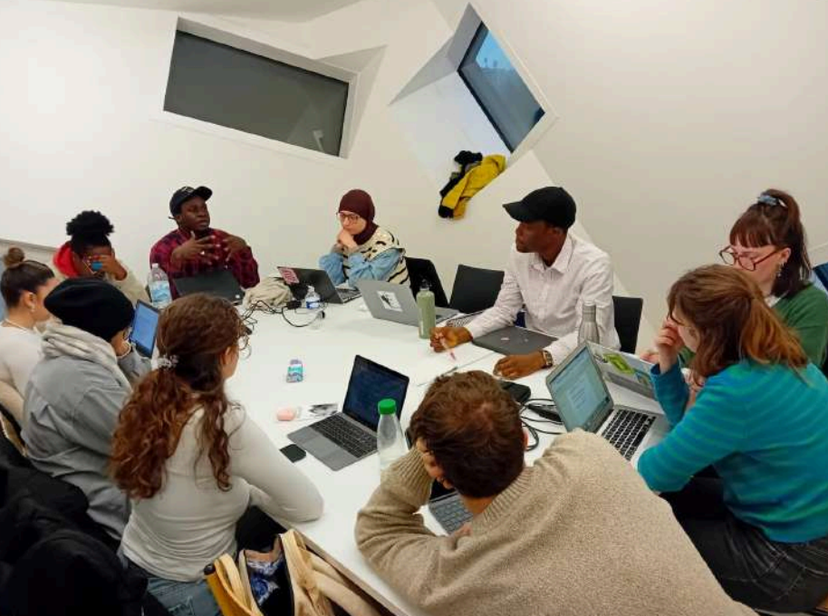
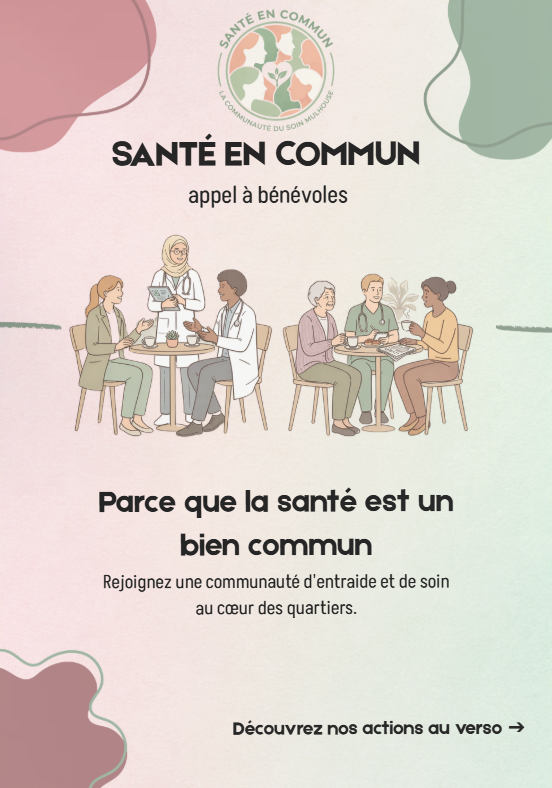

S
Trier par : Pertinence
Santé en Commun
Association de santé communautaire • Mulhouse
1 h •
🚀 L'association Santé en Commun débarque sur LinkedIn !
Et pour inaugurer notre page, quoi de mieux que de revenir aux sources de notre projet ? 🌱
Pendant une semaine, nous avons eu la chance de collaborer avec les étudiant.e.s du Master 2 Économie Sociale et Solidaire (ESS) de l'Université de Haute-Alsace (UHA). À travers un "Voyage Apprenant" immersif dans les quartiers mulhousiens (Drouot, Coteaux, Péricentre), nous avons croisé nos regards sur un enjeu crucial : Comment repenser l'accès au soin et créer un centre de santé communautaire adapté aux réalités de notre ville ? 🩺🤝
Ce travail de terrain, fait de déambulations, d'entretiens avec des soignants, des travailleurs sociaux et des habitant.e.s, a donné naissance à un rapport riche et précieux qui nourrit aujourd'hui nos actions.
Un immense merci aux étudiants (Karima, Julie, Célia, Yousra, Lydie, Khouloud, Luna, Lou, Benziane, Ngagne et Serge) pour leur regard critique et leur engagement ! 🎓
👉 Curieux.se de découvrir notre démarche ? Lisez les conclusions de ce rapport passionnant (lien en commentaire) et abonnez-vous à notre page pour suivre la création de nos futurs "Cafés Santé" ! ☕
#SanteCommunautaire #Mulhouse #InnovationSociale #ESS #UHA

Rapport final - Voyage apprenant Mulhouse.pdf
71 pages • Université de Haute-Alsace
12
2 commentaires
Santé en Commun
Association de santé communautaire • Mulhouse
1 j •
☕ Et si on parlait santé, mais avec un bon café ?
Chez Santé en Commun, nous croyons profondément que la santé est un bien commun. C'est pourquoi nous lançons nos "Cafés Santé" au cœur des quartiers de Mulhouse : des espaces d'écoute, de prévention et d'orientation où chacun a sa place. 💬
Pour faire vivre ce projet, nous avons besoin de VOUS !
Nous recherchons des bénévoles pour animer ces temps d'échanges (même de façon ponctuelle) :
🩺 Professionnel.le.s de santé (Médecins, IDE, Sages-femmes...)
🤝 Travailleurs sociaux
🏘️ Habitant.e.s et usager.ère.s (votre "savoir expérientiel" est une richesse inestimable !)
Rejoignez un groupe mixte, bienveillant et engagé pour réduire les inégalités de santé sur notre territoire.
👉 Scannez le QR Code sur l'image ou inscrivez-vous en 2 minutes via le lien en commentaire !
N'hésitez pas à partager ce post à votre réseau mulhousien ! 🔄
#Benevolat #Mulhouse #Solidarite #TravailSocial #Infirmier

8
Santé en Commun
Association de santé communautaire • Mulhouse
2 j •
🤝 Soignants et Travailleurs Sociaux de Mulhouse : Travaillons ensemble !
Sur le terrain, nous faisons tous le même constat : face aux déserts médicaux, au renoncement aux soins ou à la barrière de la langue, le parcours de santé des habitants est parfois un véritable parcours du combattant. 🚧
L'association Santé en Commun souhaite agir en complémentarité avec vous. Nos permanences et nos "Cafés Santé" ont vocation à devenir des espaces de relais et de réassurance.
🎯 Notre proposition :
- Pour les acteurs sociaux (CSC, CCAS, associations) : Un lieu ressource vers lequel orienter les personnes que vous accompagnez.
- Pour les soignants (CPTS, MSP, libéraux) : Un espace pour faire de la prévention autrement, en prenant le temps, hors de la pression du cabinet.
Faisons réseau ! Si vous souhaitez découvrir notre démarche, échanger sur vos réalités de terrain, ou imaginer des passerelles, prenons un café (littéralement ! ☕).
Contactez-nous en message privé ou par e-mail à santeencommun@gmail.com 📩
#Partenariat #CPTS #Mulhouse #MedecineDeVille #ActionSociale